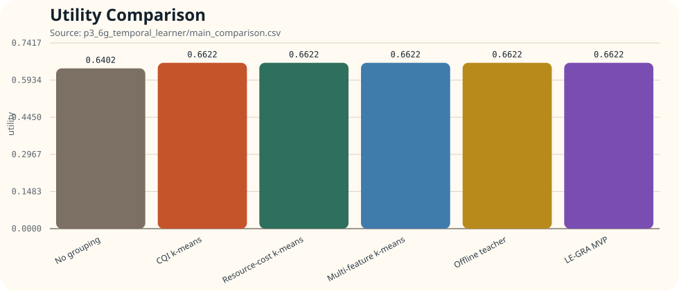
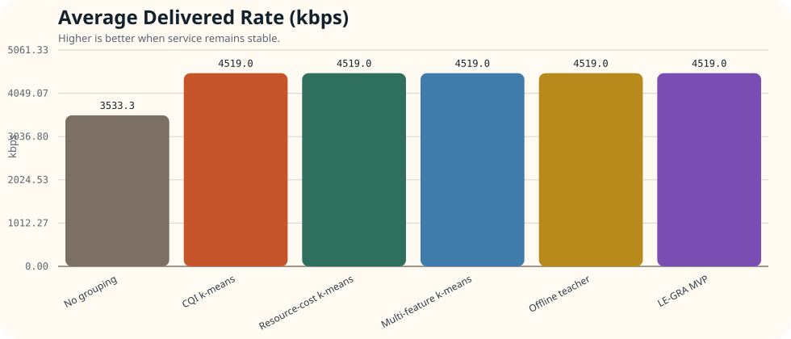
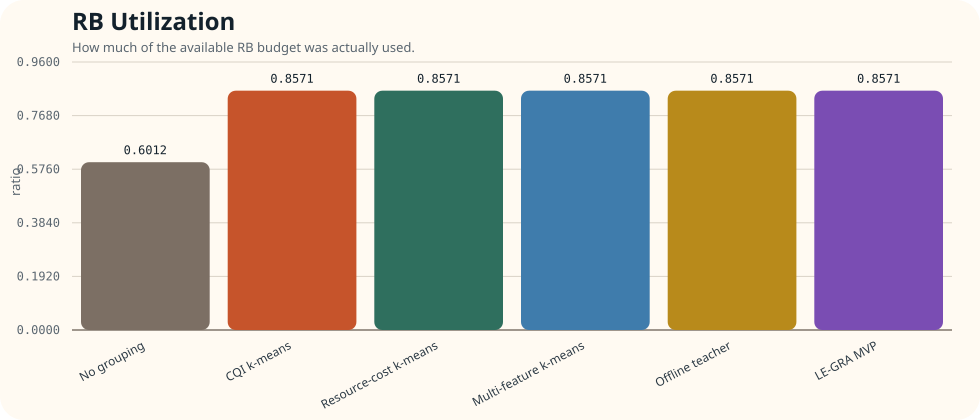
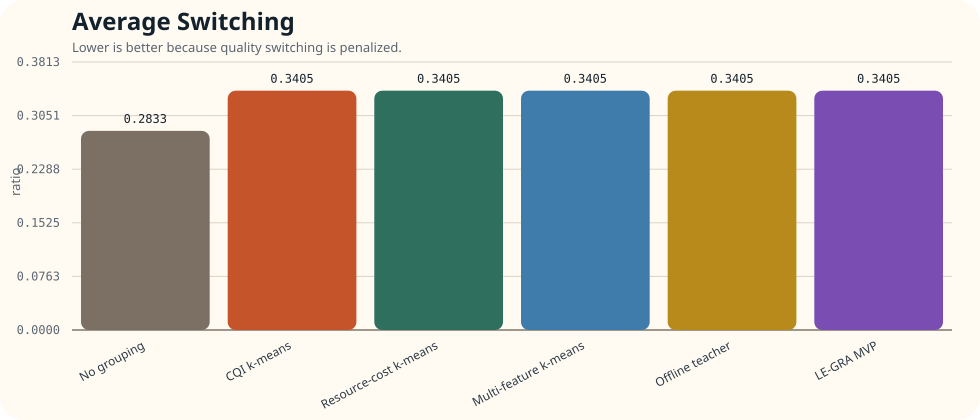
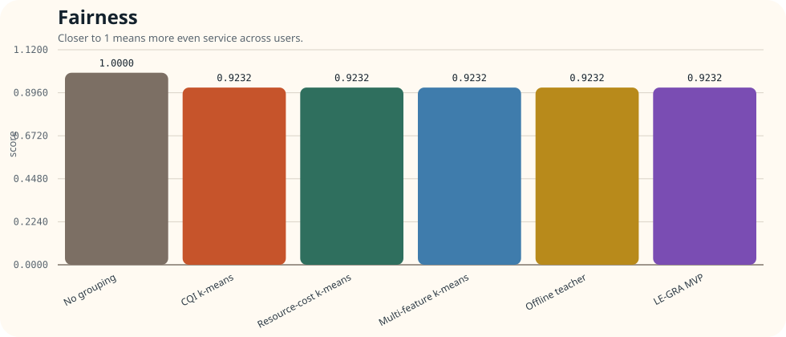
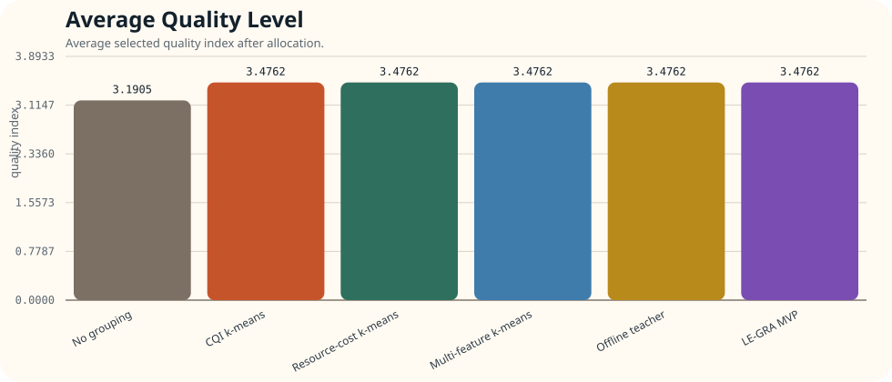
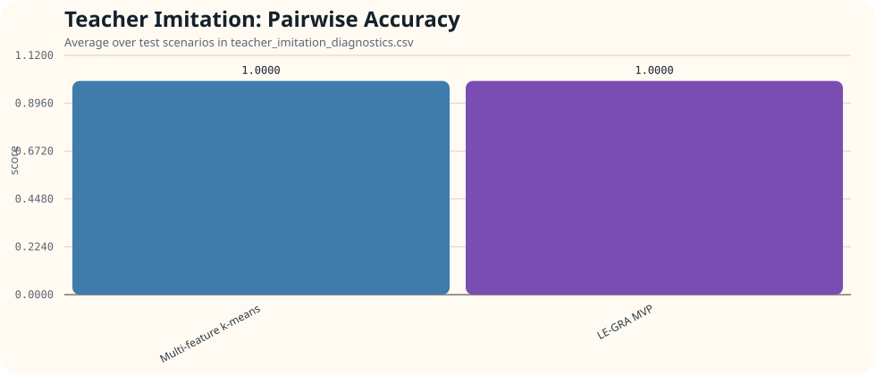
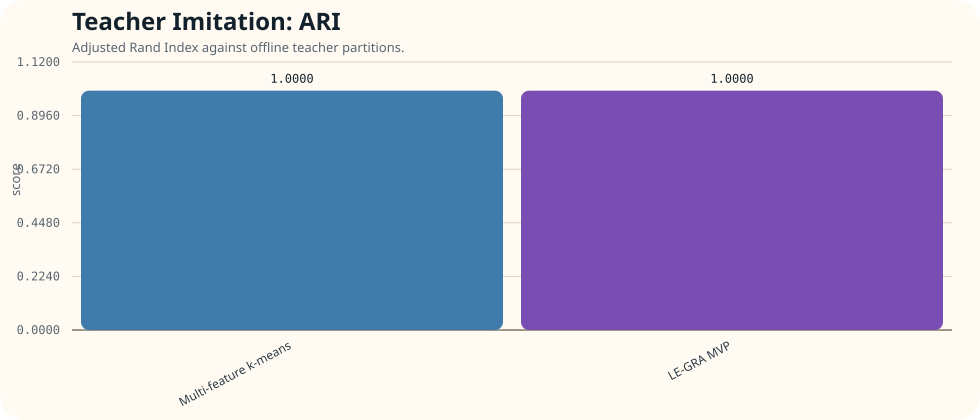
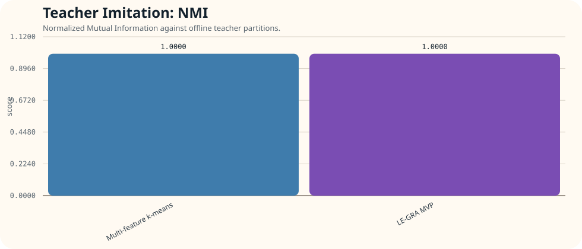

Metrics Visualization
目前方法 Metrics 圖表與分析
資料來源是 p3_6g_temporal_learner/main_comparison.csv 與
p3_6g_temporal_learner/teacher_imitation_diagnostics.csv。
這是一個 focused temporal regime，設定為 feature_mode=history_cost_quality、
rb_budget_ratio=0.32、max_groups=3。
總結
先看最重要的三句話
- 目前這個 regime 裡，除了 No grouping 之外，其它五個方法全部打平，包含 CQI、resource-cost、multi-feature、offline teacher 與 LE-GRA。
- 相對於 No grouping，這五個方法都把 utility 從 0.6402 提升到 0.6622，提升幅度是 0.0221。
- 在 teacher imitation 指標上，Multi-feature k-means 與 LE-GRA 平均 pairwise / ARI / NMI 全部都是 1.0，代表在這個 slice 上兩者都完整重建了 teacher 的群組結構。
Allocation
Utility

Allocation
ADR

Allocation
RB Utilization

Allocation
Average Switching

Allocation
Fairness

Allocation
Average Quality

Teacher Imitation
Pairwise Accuracy

Teacher Imitation
ARI

Teacher Imitation
NMI

解讀
圖表代表什麼
- Utility / ADR / Average Quality：代表最終 multicast allocation 的效益。
- RB Utilization：代表方法是否真的把可用 RB 預算用起來。
- Average Switching：越低越好，因為切換太多會被 utility 懲罰。
- Fairness：越接近 1 代表服務越平均。
- Pairwise / ARI / NMI：代表方法在群組結構上有多接近 offline teacher。
分析
這組結果的核心 insight
- No grouping 明顯較差：它的 utility、ADR、average quality、RB utilization 都明顯落後，代表這個 temporal regime 確實需要分群，不能把所有人硬綁一起。
- 其餘五個方法完全重合：這表示在這個 focused slice 裡，真正困難的不是「要不要分群」，而是「只要你找到那個 teacher split，誰都能贏」。
- CQI 已經足夠：因為 CQI k-means、resource-cost、multi-feature、teacher、LE-GRA 全部同分，代表這個 slice 的可分結構已經強到 CQI 也能看見，feature richness 沒有被真正考驗到。
- LE-GRA 在這裡證明的是可學到，不是明顯超越：teacher imitation 指標 1.0 很漂亮，但 multi-feature k-means 也是 1.0，所以這個結果比較支持「LE-GRA 能學到 teacher」，而不是「LE-GRA 超越 hand-crafted feature baseline」。
- resource-cost / multi-feature 的價值沒有被否定，只是這個 regime 不夠 hard：當一個 slice 太乾淨、太容易 split 時， richer feature 的優勢自然不會被拉大。
表格
主要數值總表
| Method |
Utility |
ADR (kbps) |
RB Utilization |
Avg Switching |
Fairness |
Average Quality |
Avg Groups |
| No grouping | 0.6402 | 3533.3 | 0.6012 | 0.2833 | 1.0000 | 3.1905 | 1.0000 |
| CQI k-means | 0.6622 | 4519.0 | 0.8571 | 0.3405 | 0.9232 | 3.4762 | 1.5714 |
| Resource-cost k-means | 0.6622 | 4519.0 | 0.8571 | 0.3405 | 0.9232 | 3.4762 | 1.5714 |
| Multi-feature k-means | 0.6622 | 4519.0 | 0.8571 | 0.3405 | 0.9232 | 3.4762 | 1.5714 |
| Offline teacher | 0.6622 | 4519.0 | 0.8571 | 0.3405 | 0.9232 | 3.4762 | 1.5714 |
| LE-GRA MVP | 0.6622 | 4519.0 | 0.8571 | 0.3405 | 0.9232 | 3.4762 | 1.5714 |
Teacher Imitation
群組結構模仿指標平均值
| Method |
Pairwise Accuracy |
ARI |
NMI |
| Multi-feature k-means | 1.0000 | 1.0000 | 1.0000 |
| LE-GRA MVP | 1.0000 | 1.0000 | 1.0000 |